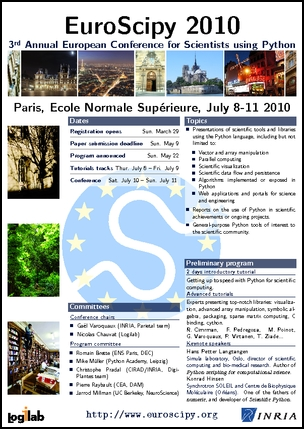
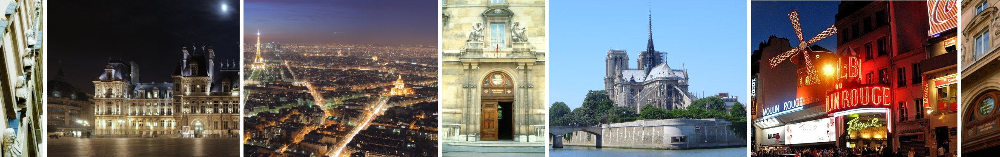

EuroScipy 2010, the 3rd European meeting on Python in Science, will be held July 8-11 in the center of Paris, at the Ecole Normale Supérieure.
We have made good progress in the organization, and we already have an exciting program although paper submission is not yet even open.
Tutorial tracks
There will be two tutorials tracks:
- An introductory track, to bring attendees up to speed with Python in science. Even if you are a complete beginner, after these two days, you should be able to be efficient using Python for scientific purposes.
- An advanced tutorial track, covering in-depth specific tools and projects, aimed at experienced users and presented by leading experts of the topic.
We will soon be requesting feedback from you to help us choose between the different thrilling tutorial propositions that we have for these tracks. More on that later…
Keynote speakers
Hans Petter Langtangen
- Simula laboratory, Oslo, director of scientific computing and bio-medical research
- Author of the famous book Python scripting for computational science
Konrad Hinsen
- Synchrotron SOLEIL and Centre de Biophysique Moléculaire (Orléans)
- One of the fathers of numeric, and developer of Scientific Python.
Help us spread the word
The poster of the conference can be downloaded:
Help us spread the word: print it and post it at your workplace!
The exciting city of Paris
The conference will take place in the center of Paris, in the very lively “quartier latin”, in the prestigious and historical ‘Ecole Normale Supérieure’. In the morning, on your way to ENS, drop by a café for a French croissant, served by a French waiter with a typical French accent in English. In the evenings, walk one block to enjoy the night life “rue Mouffetard”, or venture further to stroll on the river banks of the Seine, along which people dance to street music.
